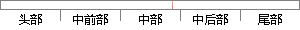

其中大于等于0表示半正定。
片段位置图

相似结果|
相似片段 1：指标．每个指标只分好、坏两种情况，为了便于用统计分析，在这里，检验员分别用1、2表示好、坏．为了确定指标变量能否反映样本的性质，该工人作如下假设若所抽样本的协方差矩阵以大于或等于11／12的概率正定
相似片段 2： ! 为亚正定的 .定义 #：设 !，. 都是 # 阶实矩阵，如果 ! $ .是半正定矩阵，则记为 ! % .，称 ! 大于等于 . .本文所讨论的矩阵都是实方阵，"（ !）表示方阵 ! 的对称分支
|
※ 片段修改建议 ※
近似词参考：- 其中：此中 个中
- 等于：即是
- 表示：暗示 默示 示意 透露表现 表现
系统自动生成语句：此中大于即是0暗示半正定。
注：本片段修改建议为系统自动生成，仅供参考。